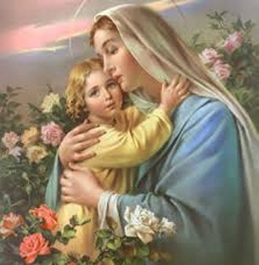

PREFÁCIO
Escrever sobre NOSSA SENHORA é
um prazer de dimensões incalculáveis, porque a MÃE DE DEUS se mantém 
Esta postura da SANTÍSSIMA VIRGEM MARIA é permanente e invariável, e de modo misterioso inunda caudalosamente todas as suas imagens inspiradas, feitas em pinturas, fotografias e em esculturas de granito, bronze, mármore e gesso, envolvendo-as com uma atmosfera de maternal carinho, que faz desabrochar sorrisos e despertar um profundo sentimento amoroso nos seus filhos, estimulando o cultivo de uma agradável, carinhosa e fervorosa devoção.
Às vezes, as pessoas até ficam envolvidas por uma suave e amorosa brisa de disposição afetiva, e então, com o coração revestido de júbilo, interiormente exclamam com grande admiração: “Como é bom estar próximo a NOSSA SENHORA?”
Na verdade, MARIA, NOSSA SENHORA, quando concebeu o VERBO ENCARNADO, pela dignidade e sincera grandeza do seu Amor, recebeu do PAI ETERNO CRIADOR como testemunho de carinho e confiança, a metade do Reino de DEUS; JESUS seu querido e amado FILHO ficou sendo o REI DA JUSTIÇA, e ELA, a nossa querida e amada MÃE tornou-se a RAINHA DE MISERICÓRDIA. Para nós, sem dúvida, foi uma surpresa de imensa alegria, contar ao longo da existência, com os cuidados e o incomensurável Amor da MÃE DE DEUS que também nos foi dada para ser a NOSSA MÃE!
E a SANTÍSSIMA VIRGEM MARIA, ainda em Seus dias na Terra, nos ensinou o caminho do sincero e apaixonado Amor a DEUS, nos envolvendo de maneira sobrenatural e indescritível, com seu adorável olhar misericordioso de MÃE, nos inspirando e convidando a caminhar na vida, olhando e seguindo os passos do Seu Divino e Amado FILHO JESUS.
Por isso, MÃE QUERIDA, na imensidão dos seus filhos carinhosamente repletos de muito amor, nós do APOSTOLADO DOS SAGRADOS CORAÇÕES, também ansiamos pelos Vossos carinhos, assim como desejamos VOS servir, propagando a VOSSA incomensurável bondade, divulgando o VOSSO amor infinito sem fronteiras, e a VOSSA admirável e impressionante misericórdia. Com este desejo, fizemos nascer este Site: “MÃE DE DEUS E NOSSA MÃE”, no sentido de colaborarmos para que a SENHORA, SANTÍSSIMA MÃE QUERIDA, seja mais conhecida e amada por todos os seus filhos. Das muitas oportunidades que existem, que eles tenham neste site, mais uma honesta e cuidadosa chance de conhecê-LA, fato que indubitavelmente lhes proporcionará uma adorável alegria interior, possibilitando o insubstituível momento de apreciar o testemunho da grandeza do VOSSO imenso e Maternal amor, e também, de serem beneficiados pelas incomensuráveis graças que emanam do VOSSO tão querido e amoroso Coração de MÃE.
APOSTOLADO DOS SAGRADOS CORAÇÕES
http://www.apostoladosagradoscoracoes.com/